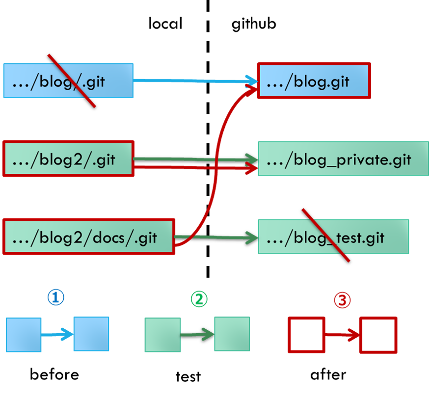

github pages上のブログで下書き原稿が公開されないようにする

Github pagesを利用するにはソースコードを公開する必要がある。そのため、github pages上のhugoブログでも、非公開（draft: true）のはずの下書き原稿に誰でもアクセスできてしまうという問題がある。これを防ぐため、ビルドしたディレクトリのみを公開するように設定する。
方法論
以下の、2つのリポジトリを作る。
- github pagesとして公開するファイルを配置するリポジトリ
- 公開ファイルにhugoで変換する前に生コンテンツ（マークダウンなど）を配置するリポジトリ
1にはビルドしたディレクトリ（docs/）のみを公開するようにし、2はプライベートなリポジトリとする。
マークダウンファイル（~~~.md）は2にしか含まれないし、非公開設定の下書き原稿（draft: true）はビルドされないので、下書き原稿は公開されない。
（一度ビルドされてしまうと、以降ビルドされたファイルは残り続けるので注意）
2つのリポジトリを同期するのがめんどいのでシェルスクリプトを書いておくと吉
進め方
既に運用しているブログがあるため、最終的にURLが変わらないようにする。
以下の図に示すようにbefore(現状), test, afterの3段階で行っていく。

作業
before
既に運用しているブログがある現状がbefore
test
github上で以下の2つのリポジトリをつくる
.../blog_private.git: コンテンツファイル群保管用（プライベート）.../blog_test.git: github pages公開テスト用（パブリック）
ローカルに.../blog2/を作り、元のファイル群をコピーする
.../blog2/直下の以下のファイルおよびフォルダを消す
.git
README.md
docs
gitの初期化
git init
ビルド先（今回はdocs）をサブモジュールとして公開テスト用のgithubリポジトリと同期
git submodule add git@github.com:hllneerk/blog_test.git docs
コンテンツファイル群保管用のgithubリポジトリと同期
git pull [.../blog_private.git]
ビルド
hugo
公開テスト用のgithubリポジトリにプッシュ
cd docs
git add -A
git commit -m "initial push"
git push [.../blog_test.git] main
cd ..
コンテンツファイル群保管用のgithubリポジトリにプッシュ
git add -A
git commit -m "initial push"
git push [.../blog_private.git] master
ブログがちゃんと動作しているか確認
after
今使ってるリポジトリ（.../blog.git）を初期化
testの[.../blog_test.git]を[.../blog.git]で置き換えて全く同じことをする
シェルスクリプトで一括同期
.../blog2/push2github.shを作成
#!/bin/bash
# build
hugo
# push to public repository
cd docs
git add -A
git commit -m "post"
git push git@github.com:hllneerk/blog.git main
cd ..
# push to private repository
git add -A
git commit -m "post"
git push git@github.com:hllneerk/blog_private.git master